今天小编给大家带来链合玩法教程，胜率非常高，目测会成为网赚圈下一个风口，自己操作可以赚钱，今天主要跟大家讲解下不推广的情况下单人操作的技巧，授之以渔。具体的推广方式就不多提了，谈大佬，引流什么的，事在人为。
先介绍下玩法，也可以先往后看平台介绍。平台紧跟大盘趋势，实时更新，猫腻较少。这套玩法分析和股票外汇期货类似，因为门栏很低，掌握技巧轻松日撸千元。你可能会觉得很麻烦，但是务必看完并理解所有的技巧再开始操作，利用好技术分析而不是让你搏一搏单车变摩托，不适合操作的可以推广，不会推广的自己操作也不比推广赚的少。
这个方法小编昨天晚上测试了一晚上，很稳定，今天上午又测试了2个小时，还是很稳定。玩了56把，每把买20元，赢39把，亏17把，毛利440元，除去手续费112元，净赚328元。
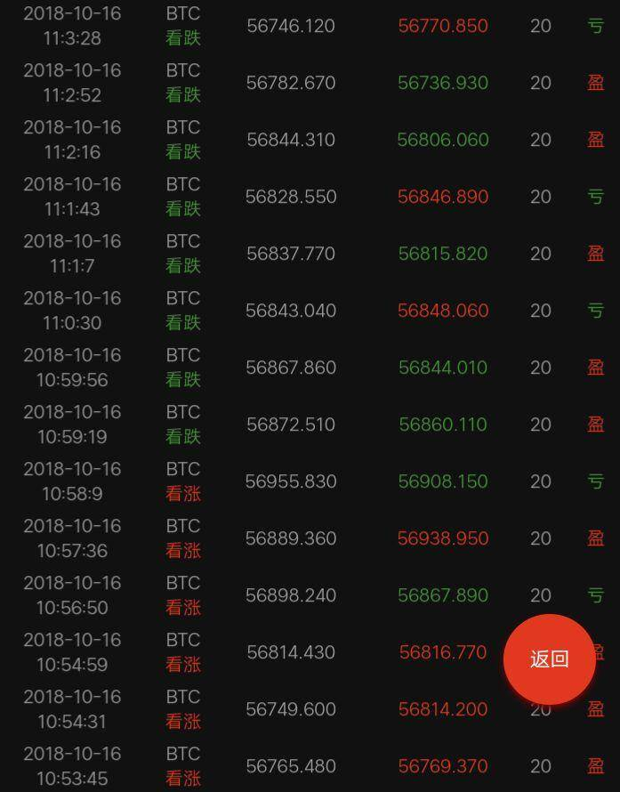
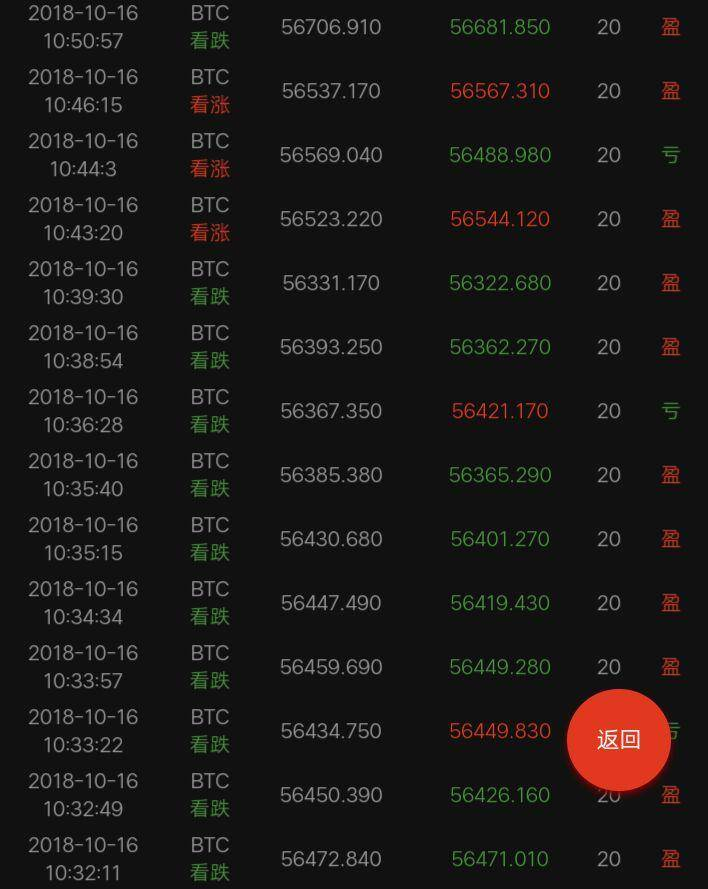
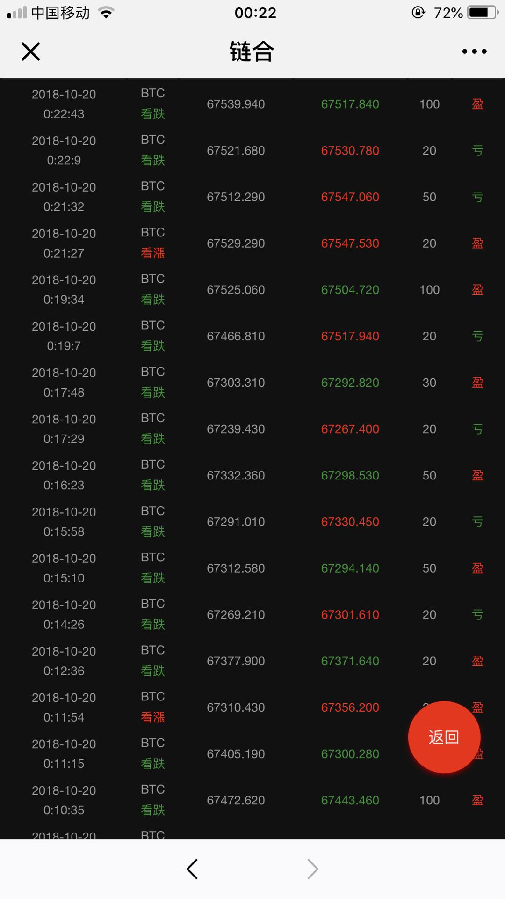

那么小编到底是用什么方法做到这么高的准确率的呢？
方法就是：跟随涨跌大趋势买，趋势上涨我们买涨，趋势下跌我们买跌，不要和趋势作对，看不清趋势的时候不要买，所以还是抓机会买。
下面老苏用具体的图片为大家讲解下：
1、先看第一张图：
上图箭头所指两个位置，就是买点，按正常人的思维，这两个地方应该是买跌，因为前面是从底部直接上涨上来的，按正常这里应该是买跌，但是这里我们不能买跌，应该买涨，我们要做那个不正常的人，如果平台按大部分正常人的思维来进行下一步走势，那么平台不得亏死。
2、再看第二张图：
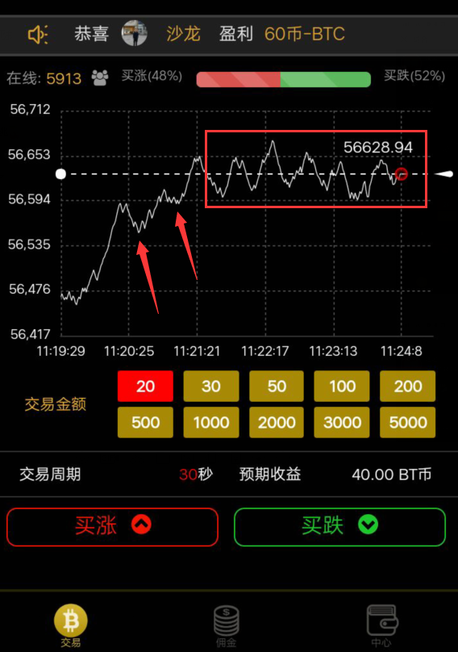
同理，这张图箭头所指的位置，同样是买涨，因为前面是从底部涨上来的，不会顺大家的意直接下跌，然后长方形框住的那段走势，不要买，因为这段走势不明显，我们不知道接下来是涨还是跌，这个时候我们就安静的等待，等待它走出新的大趋势。
3、再看第三张图：
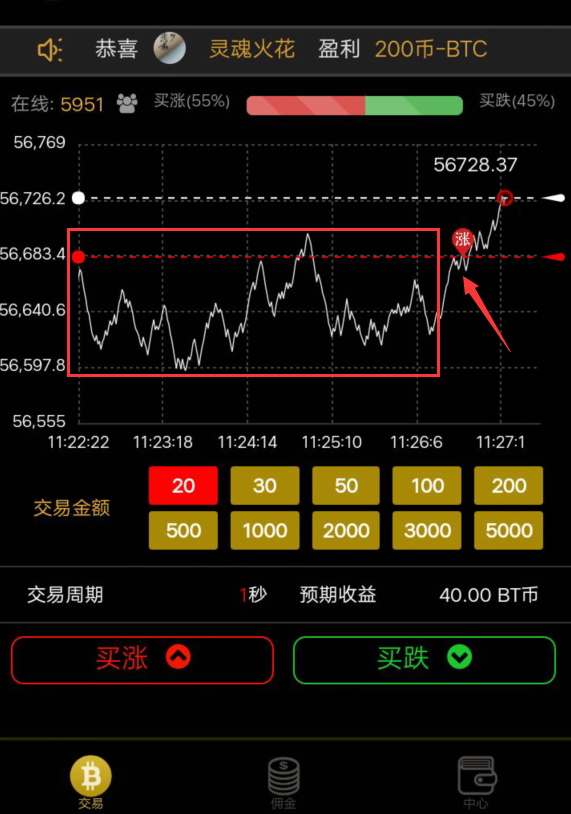
前面长方形框住的部分走势不明显，无买点，然后走到箭头所指的位置，就出现一个买点了，买涨，同理，这里正常人的思维会去买跌，因为前面是底部涨上去的，但是我们不买跌，要买涨。
4、再看第四张图：
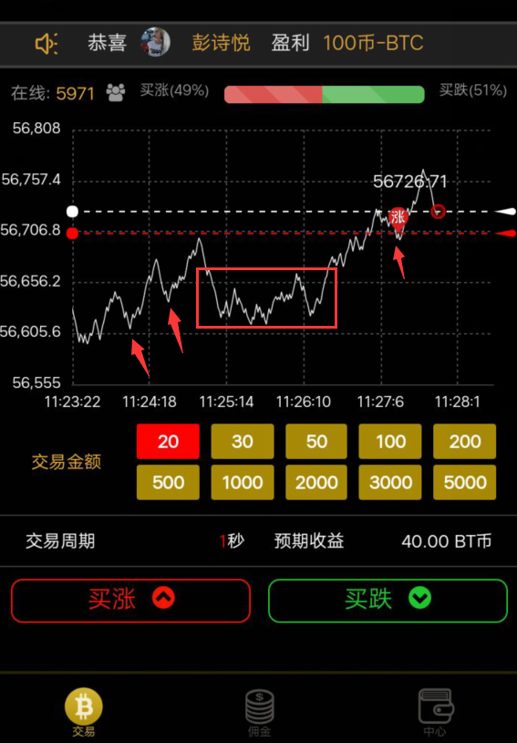
上图中，左边箭头所指的两个位置可以买涨，因为这是一轮小上涨趋势，然后长方形的那段没有明显走势，我们观望即可，然后走到长方形右边的位置，可以看出走势在往上涨，然后中间下跌了一下，忽悠大家买跌，那个位置我们又可以买涨，又赚了。
5、再看第五张图：
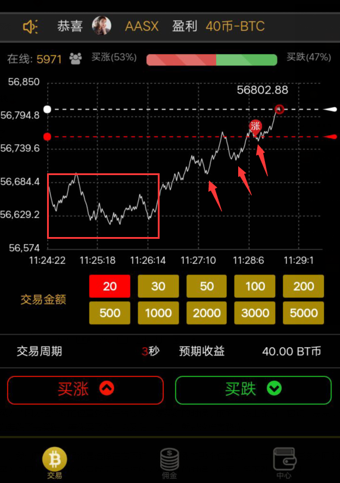
这张图，还是一样，长方形框住的部分没有明显趋势，但是过完长方形那段上涨的趋势就出来了，箭头所指的3个地方都是买点，都可以买涨，全部赚。
6、接着看第6张图：
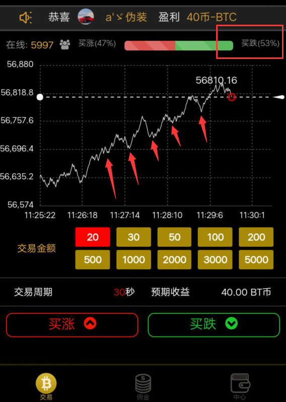
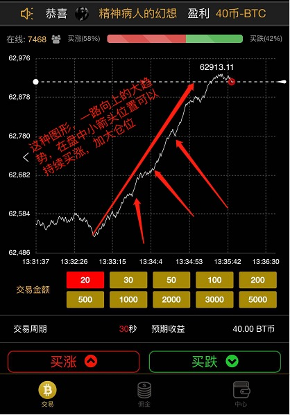
这2张图的上涨趋势够明显了吧，一大堆买点，箭头所指的5个位置全部买涨即可，再看下买跌的百分比占53%，更多的玩家认为涨这么多了，要跌，但是它就是不跌，就是小跌一下忽悠一下继续上涨，这一波上涨，让那些追跌的死一大片，所以千万不要和趋势作对。
7、再看第七张图片：
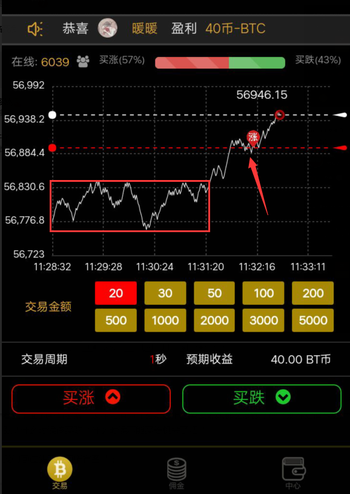
还是同理，这张图大家应该都知道哪里可以买涨吧，长方形框住的部分不要管，无买点，过完长方形后上涨趋势出现，轻松抓住一个上涨的买点，又赚了。
8、看第八张图：
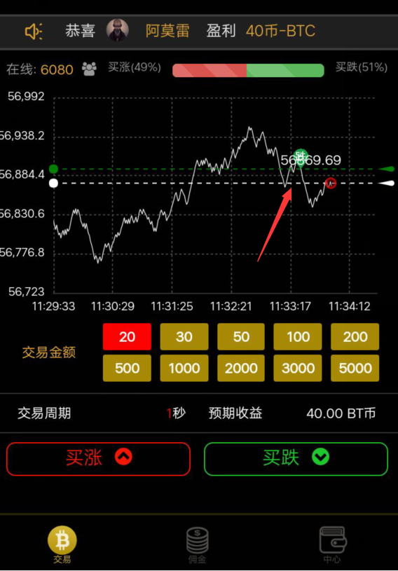
任何一轮趋势都有停止的时候，一轮上涨趋势走完，就会下跌，或者走一段没趋势的走势，再继续来一轮上涨，一轮趋势走完后，我们就观望，耐心等待下一轮趋势的到来。
如何判断一轮上涨趋势走完结束，一直上涨的不再上涨，而是出现大幅下跌或者一涨一跌，一涨一跌就是上面所有图片中的长方形框住的部分，小编称之为无明显趋势。
9、看第九张图：
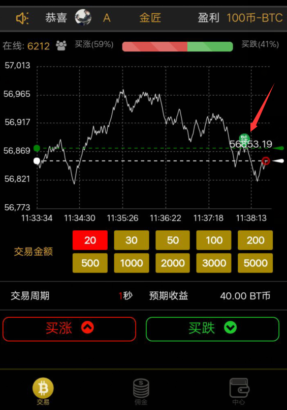
上图中，一轮下跌趋势出现，箭头所指的位置按正常思维应该是买涨，因为前面是下跌的，但是这个地方涨一点又是套路你去买涨，但是这个回调上涨的点我们要买跌。
10、看第十张图：
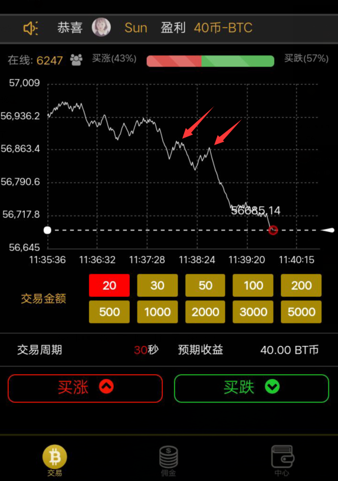
这张图的下跌趋势够明显了吧，随便就能找到两个买跌的买点。
11、再看下面两张图：
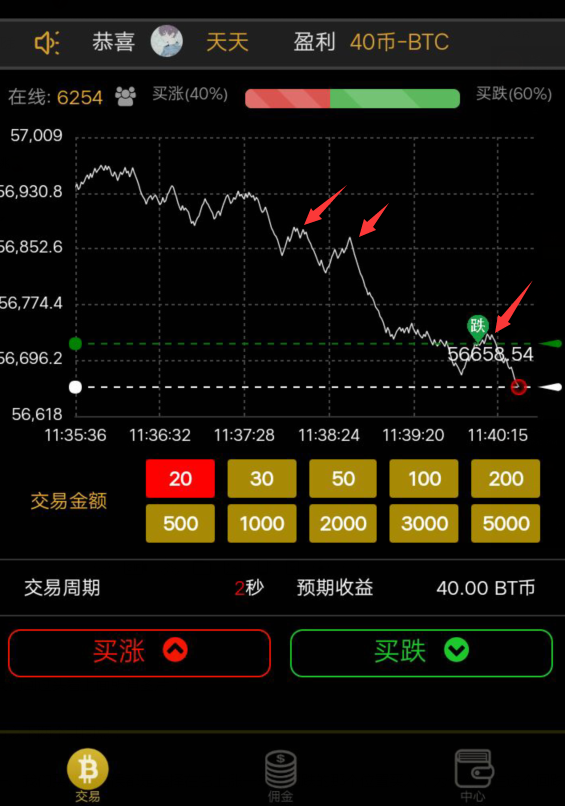
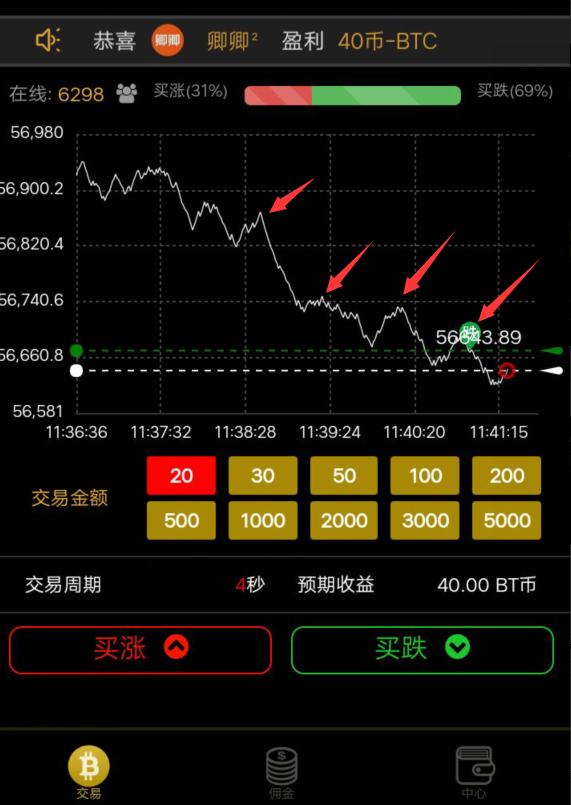
上面两张图片，这一轮下跌，买入跌的买点够多了吧。
12、看最后一张图：
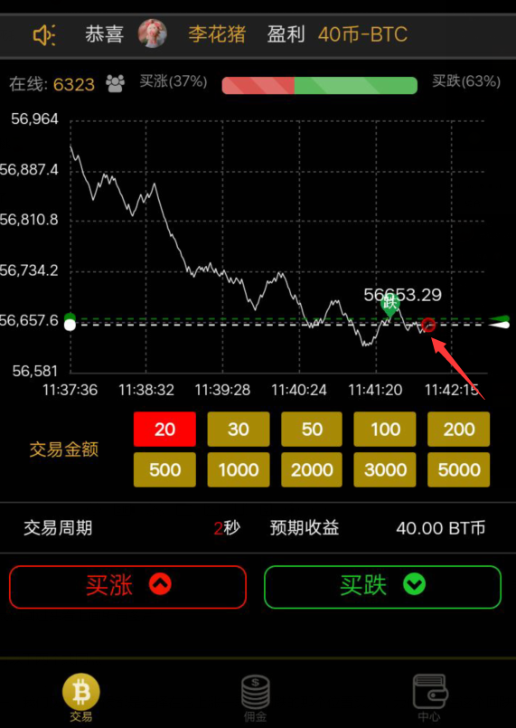
这轮跌的走势到上图箭头所指的位置差不多走完了，如何看出来的？因为箭头所指的位置这个线已经不是下跌了，而是开始慢慢平行向上了，这个时候我们就停止，等待下一轮趋势出现再找买点买入。
看完上面的所有图解，现在知道为什么小编上午测试能赚那么多钱了吧？
现在知道什么时候该买涨？什么时候该买跌？什么时候不能买等机会了吧？
本方法看似复杂，其实很简单，上面老苏用了大量的图片做说明，主要是为了让大家更容易看懂。
归根结底一句话：跟大趋势买，不要和趋势作对，有明显趋势的时候跟趋势买，不要被小波动所迷惑，因为那是平台的套路，没明显趋势的时候不要买，等待机会。
我们回过头看上面所有图片：
有以下两个共同点：
一、我们买涨的时候都是选择在它上涨一段后回跌的那个位置买入，为什么要在这个回跌的位置买入？因为这个跌的位置可能是平台忽悠大家买跌的时候，前面一段上涨后，它跌一点点，让你认为要跌了去买跌，等你买了跌，它又涨上去了，就是这样套路你，买在二波起涨点。
二、我们买跌的时候都是选择在它下跌一段后回涨的那个位置买入，为什么要在这个回涨的位置买入？因为这个涨的位置就是平台忽悠大家买涨的时候，前面一段下跌后，它涨一点点，让你认为要涨了去买涨，等你买了涨，它又跌下去了，就把你套路了。
方法原理：
下面这段文字一定要用心看，用心领会！
首先这种涨跌90%以上的玩家都认为上涨后会跌，下跌后会上涨，但是偏偏相反，大部分人认为要涨，它偏偏跌，大部分人认为要跌，它偏偏上涨，所以我们就要反其道而行之，做那个10%的不正常玩家，才能赚钱。
如果大部分认为要涨，如果平台去开涨，那么平台就要亏很多钱，相反，如果大部分人认为跌，如果平台去开跌，那么平台也要亏很多钱，平台开着不是为了亏钱的，平台是要赚钱的，明白吗？
那么为什么这个方法不能把把赚，因为平台偶尔也要放点水，让大家赚点，所以有时候大部分人认为要涨的时候，平台也会开涨，要不然次次都宰玩家，谁还玩？
既然这样，那如果人人都掌握了这套方法，平台岂不是要亏死？
这里小编就要说一下人性了，事实是99%以上的人玩都没有方法，是凭感觉，认为涨后就该跌，跌后就该涨，而且都是买不中翻倍，不中继续翻倍，最后亏死。
还有一种人，就是心态不好，玩几把亏了，马上急眼了，想一把梭哈赚回来，往往就这样亏死了，这样的人占最多。
所以，方法是死的，心态是最重要的，方法只是辅助，再好的方法如果你心态不好，还是会亏钱。
今天小编写这个项目，会帮了一批人，也会害了一批人，帮了那些心态好的，害了那些心态不好的，小编并不推荐所有的人都去做这个项目。
如果你确定要玩这个，一定要控制好自己的心态，而且要小额玩，一把玩20元就够了，不要玩太大，不要想靠这个发财，这个可能性很小，我们每天赚个100生活费就收手，小编自己就是每把20元，绝不盲目玩多，大行情来了也会大单。
如果这把买20亏了，下把有机会还是买20元，永远不要翻倍，没有机会坚决不要买，一定要控制好自己的双手。
为什么我们用这个方法很稳定，因为玩这个的都是看涨跌走势买的，平台的套路主要是走势图，这个走势是死的。
这个方法可能你一下子掌握不了，要结合实际操作一段时间后，才能熟练掌握。
请把上面的文字再认真看一遍！！！
第一次进入平台的用户必须关注下识别二维码弹出的公众号，成功关注一次即可，以后不用管，以后我们从下图中的二维码登录，即使公众号被封了也不影响。
2、如何才算登录成功？
如果登录后，在线人数显示只有几百个人，买涨买跌百分比一边是0%，一边是100%，而且一直不动，这说明没用登录成功，是登录失败，关闭重新扫码登录即可。
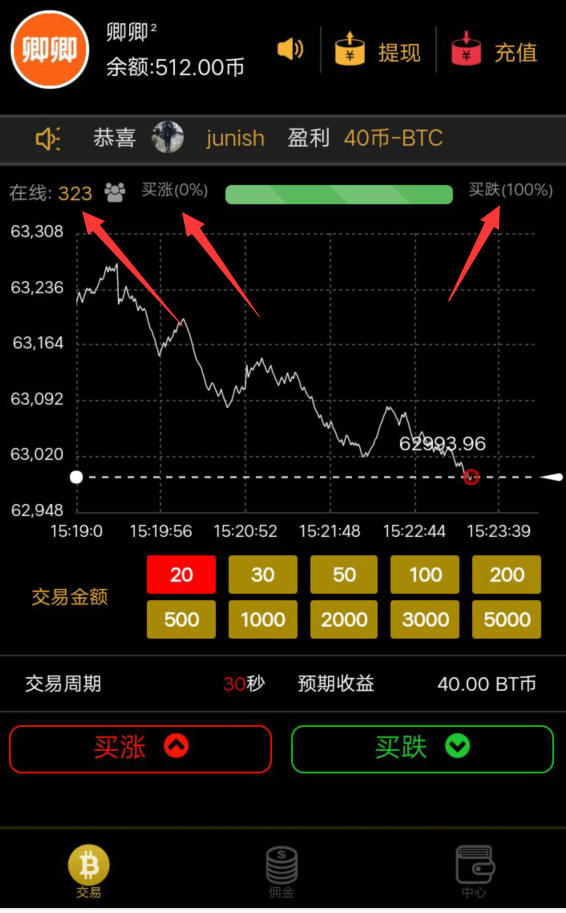
如果登录后，在线人数是几千人，涨跌百分比不是上图那种情况，就是登录成功，如下图：
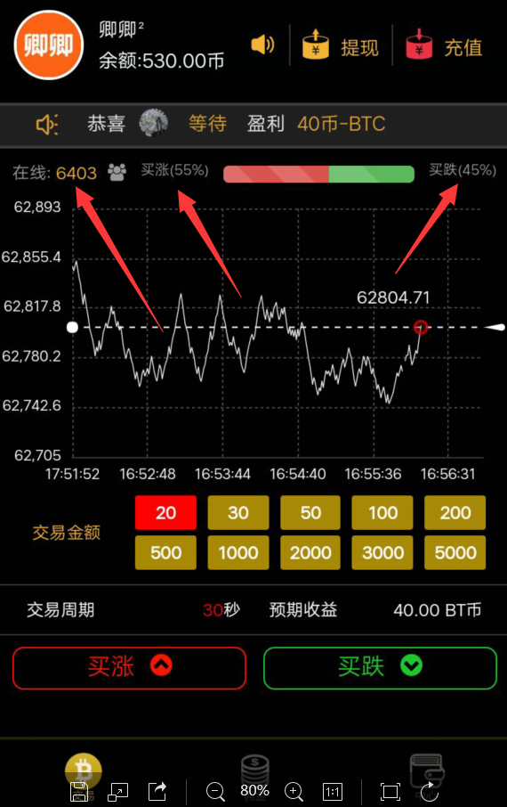
3、有时候趋势看错了，及时停止，耐心等待下一轮趋势的到来。
4、不要玩太大，用200元的本，每次买20即可，每天赚100左右收手，亏100左右也收手，当做娱乐，不要想靠这个发财，可能性太小，这不是开玩笑，切记。
5、管好自己的双手，不管输赢，不要翻倍，次次都只买20，没机会的时候千万不要买。
6、有时候平台登录不上打不开，是人多卡了，等一会就可以了。
最后，小编还是那句话，不推荐所有人都去玩这个，如果你要去玩，一定要确保自己有一个好的心态，而且是在自己经济情况允许的情况下才行，小编不保证百分百赚钱，要玩的盈亏自负。
还有，这个方法自己知道即可，尽量不要到处教别人，太多人知道这个方法并不是什么好事，当然老苏每天都会抽时间去测试这个方法，如果方法哪天失效了，会第一时间通知大家。
------------------------------------------------------------------------------------------------------------------------------